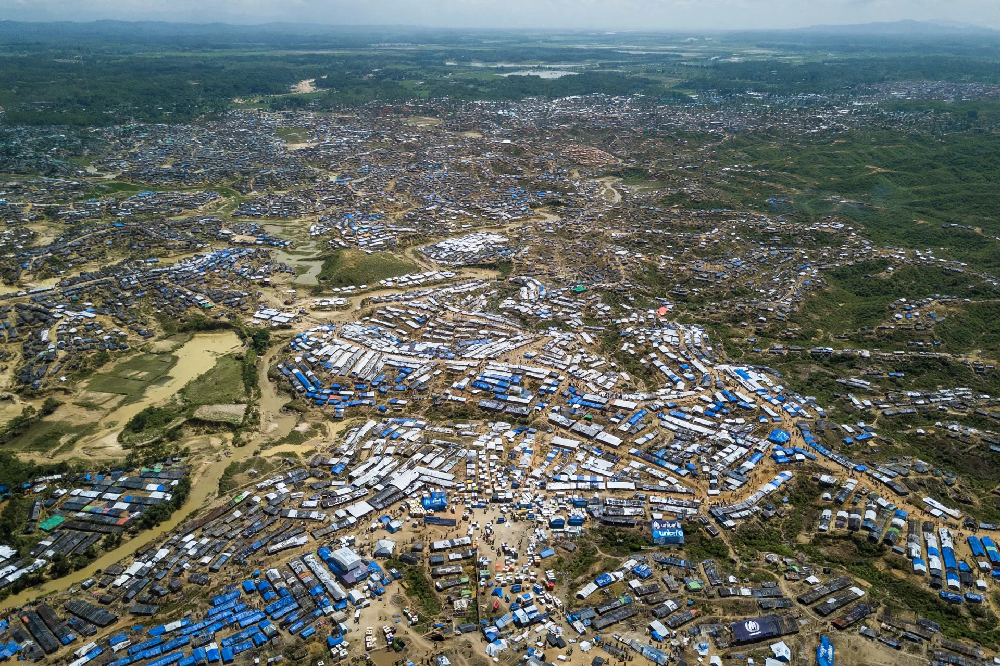
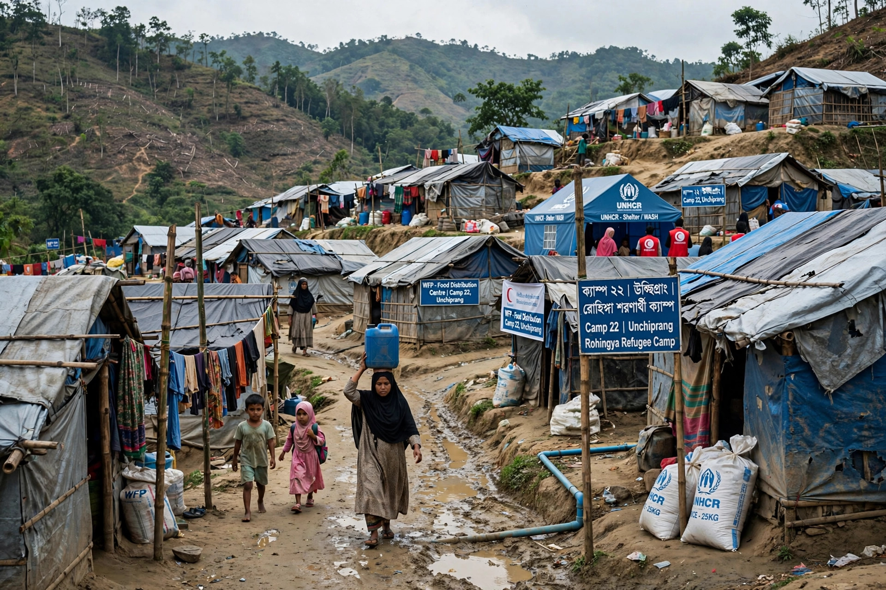

Rohingya people

| Rohingya | |
|---|---|
| Regions | Rakhine State (Myanmar); refugee camps in Bangladesh; diaspora |
| Language | Rohingya (an Indo-Aryan language related to Chittagonian) |
| Religion | Predominantly Sunni Islam |
| Status | Mostly stateless; denied citizenship under Myanmar's 1982 Citizenship Law |

The Rohingya people are a stateless Indo-Aryan ethnic group who predominantly follow Islam and reside in Rakhine State, Myanmar. Before the displacement crisis of 2017, roughly one million Rohingya lived in Myanmar, concentrated in the northern townships of Rakhine State. The government of Myanmar regards them as illegal immigrants from Bangladesh — referring to them as "Bengalis" — and the 1982 Citizenship Law effectively denies them citizenship, making the Rohingya one of the largest stateless populations in the world. Their situation is a leading case in discussions of the right to a nationality and the 1954 Statelessness Convention.
History
Muslim communities have been present in Arakan (Rakhine) for centuries, and Rohingya historians trace their presence to the medieval Arakanese kingdom, while migration also occurred during British colonial rule, when Burma was administered as part of British India. After Burmese independence in 1948 the Rohingya's status progressively narrowed. Military operations in 1978 and 1991–92 drove hundreds of thousands into Bangladesh. Restrictions on movement, marriage, education, and land compounded their exclusion, and communal violence in 2012 displaced over 100,000 people into internal camps.
2017 crisis and aftermath
In August 2017, following attacks on security posts by the Arakan Rohingya Salvation Army, the Myanmar military launched "clearance operations" that United Nations investigators described as bearing genocidal intent; more than 700,000 Rohingya fled to Bangladesh within weeks, joining earlier refugees in the camps around Cox's Bazar, which became the world's largest refugee settlement. In 2019 The Gambia brought a case against Myanmar under the Genocide Convention at the International Court of Justice, which in January 2020 ordered provisional measures to protect the Rohingya. Several hundred thousand Rohingya remain in Rakhine State under severe restrictions, and the camps in Bangladesh continue to host around a million refugees, with repatriation efforts repeatedly stalling. Their plight is frequently cited among the largest contemporary cases of forced displacement.
See also
Convention Relating to the Status of Stateless Persons · Right to a nationality · Bidoon · Forced displacement
Categories: Rohingya people · Stateless ethnic groups · Ethnic groups in Myanmar